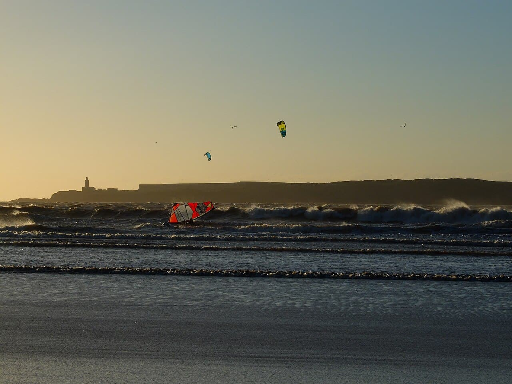

Essaouira
Maroc · windsurf, kitesurf, surf

La 'ville du vent' : baie ventée idéale pour le windsurf et le kite, ambiance médina et longues plages.
- Lieu
- Maroc
- Niveau
- Intermédiaire
- Activités
- windsurf, kitesurf, surf
- Type d'eau
- Mer / océan
- Coordonnées
- 31.51, -9.77 (position approximative du secteur)
Dangers à connaître
- Vent fort l'après-midi (alizés).
- Clapot formé dans la baie.
Le conseil d'Ocean Buddy
Matinées plus calmes pour débuter, vent musclé l'après-midi.
Ouvrir dans Ocean Buddy Télécharger sur l'App Store
Source : Description historique Ocean Buddy · vérification externe en attente.